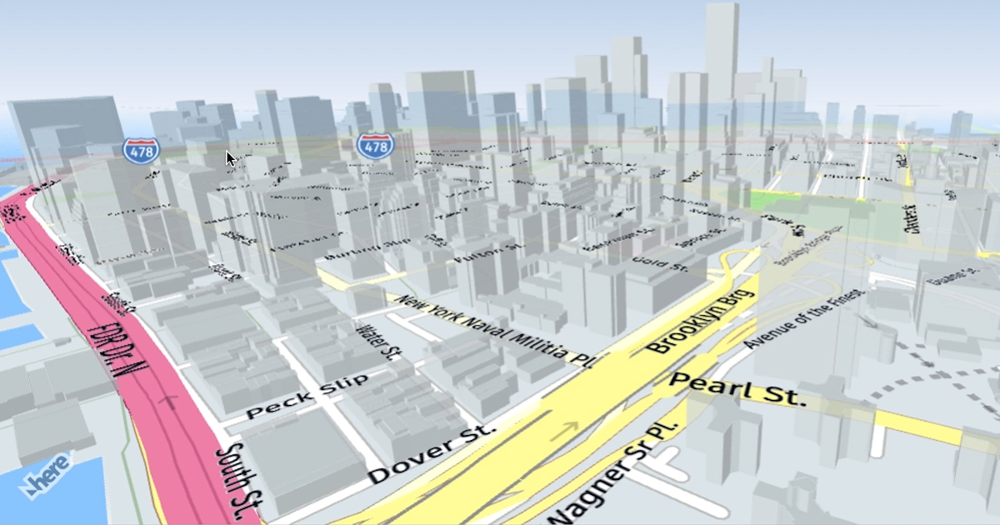

What are the Features of 川 ？
Prozone Flood Mapping
Interactive Map of Flood Prone Areas and Water Mitigation
Displaying Updated Interactive Map Data about location with flood level intensity from low to high, evacuation post and mitigation. Using newest arcgis technology and based on realtime Format data struture. Prozone Map itself divided by 3 zone which is :
-
Red Zone (Have The Highest Impact And Chance To Inundation)
-
Yellow Zone (Have The Modest Impact And Chance To Inundation)
-
Green Zone (Have The Smallest Impact And Chance To Inundation)

PrAf Program
Preventation & Aftermath
PrAf Program Used To Inform All People To Working Together As If The Flood Goes, PrAf Contains Feature-feature that include People and government to solve the problems. PrAf Contains Support Call To Nearest Gov Service And An After Flood Damage Mapping Based On User Report With Camera Picture
Victim Donation
CrowdFunding For Better Future
Solution for donators if they want to spare his income for nation development and for resolve the damage caused of the latest flood including people who lost their shelter